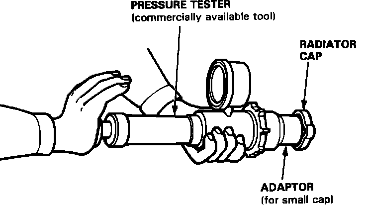

Radiator Cap: Testing and Inspection
Radiator Cap Pressure Testing:

1. Remove the radiator cap, wet its seal with coolant, then install it on the pressure tester.
2. Apply a pressure of 95-125 kPa (0.95 - 1.25 kg/cm2, 14 - 18 psi).
3. Check for a drop in pressure.
4. If the pressure drops, replace the cap.